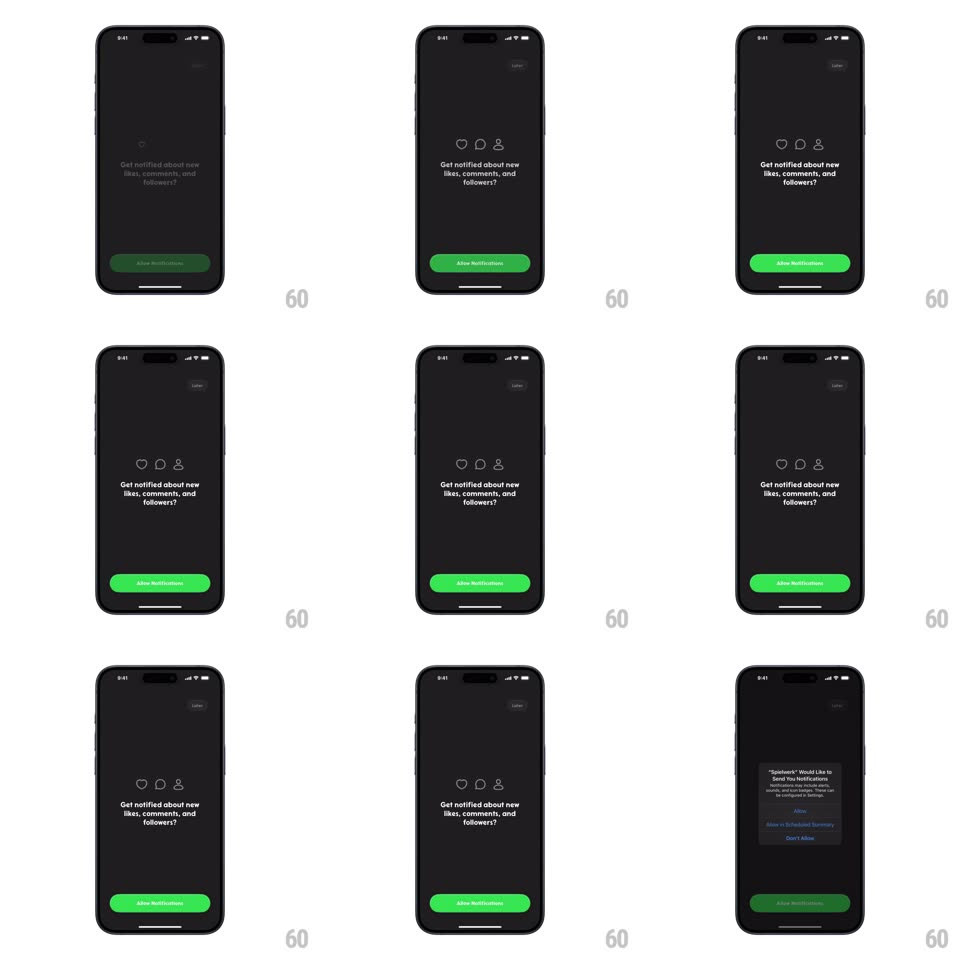

Media
Frame-by-frame

Rebuild this animation 1:1: Spiekwerk's notification prompt - three outline icons (heart, comment, person-add) spring into place one after another over the "Get notified about new likes, comments, and followers?" copy on a black screen.

Rebuild this animation 1:1: Spiekwerk's notification prompt - three outline icons (heart, comment, person-add) spring into place one after another over the "Get notified about new likes, comments, and followers?" copy on a black screen. ## Integration Integration: stack-agnostic spec - springs given as stiffness/damping, timed motions as duration + curve; map every value to your framework and animation library of choice. ## Scene Black onboarding screen: "Later" top-right, a row of three thin-stroke white icons - heart, comment bubble, person-with-plus - above the centered question "Get notified about new likes, comments, and followers?" and a green "Allow Notifications" pill button at the bottom. The sequence ends on the iOS system permission alert. ## Motion spec Pattern: staggered spring scale-in, ~700ms total. - Entrance: each icon scales from 0 with a spring (~480/17, one visible bounce) at 120ms stagger, heart first; opacity ramps 0 -> 1 in the first 150ms of each. - Copy: the question text fades up 10px (300ms) as the last icon lands. - Button: "Allow Notifications" slides up 20px and fades in (300ms, +150ms delay), then idles with a slow brightness pulse (3s). - Tap: the button compresses (scale 0.96, 100ms) and the screen fades 200ms into the system dialog. ## Calibration - Icons are thin outline strokes, not filled glyphs. - The stagger order is left to right; never simultaneous. ## Reduced motion Icons fade in together (250ms); no scale or bounce. ## Don't miss - The spring overshoot is the character - icons visibly pop past their final size once. - The green button is the only color on the black screen until the system dialog.